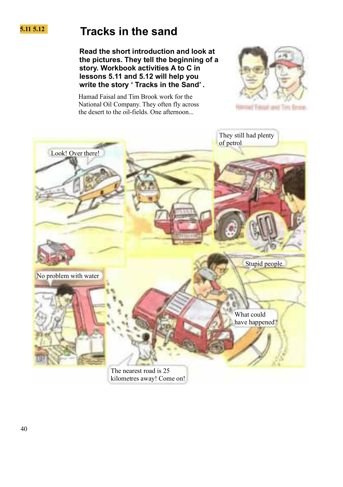

5.11 5.12 Tracks in the sand Read the short introduction and look at the pictures. They tell the beginning of a story. Workbook activities A to C in lessons 5.11 and 5.12 will help you write the story ' Tracks in the Sand' . Hamad Faisal and Tim Brook work for the National Oil Company. They often fly across the desert to the oil-fields. One afternoon... [Portrait caption: Hamad Faisal and Tim Brook] Panel 1 (Helicopter flying over desert; red car spotted below): 'Look! Over there!' Panel 2 (Helicopter landing next to the red car with its doors wide open). Panel 3 (Inspecting dashboard & ignition/fuel gauge inside car): 'They still had plenty of petrol' Panel 4 (Opening the back of the car / boot showing two large water containers): 'No problem with water' Panel 5 (Two trails of footprints walking away into the desert): 'Stupid people.' | 'What could have happened?' | 'The nearest road is 25 kilometres away! Come on!' Now do activities A to C in lessons 5.11 and 5.12.
' Tracks in the Sand' ..[
{
"num": 1,
"question": "1 One afternoon, Tim and Hamad were flying to Rig 10 when Hamad saw something in the air.",
"model_answer": "Correction: ... saw something on the ground / in the desert (below them).",
"explain_ar": "رأيا السيارة الحمراء على الرمل تحت المروحية، لا في الجو."
},
{
"num": 2,
"question": "2 'Look! Over there!' he whispered.",
"model_answer": "Correction: 'Look! Over there!' he shouted (or called out).",
"explain_ar": "الضجيج في المروحية وعلامة التعجب والفقاعة تدل على الصياح لا الهمس."
},
{
"num": 3,
"question": "3 It was a red car with its doors closed.",
"model_answer": "Correction: It was a red car with its doors open (wide open).",
"explain_ar": "في اللوحة الثانية يظهر بابا السيارة الأماميان مفتوحين."
},
{
"num": 4,
"question": "4 Tim landed the helicopter on the car.",
"model_answer": "Correction: Tim landed the helicopter near / beside the car.",
"explain_ar": "هبط بالمروحية على الرمل بجانب السيارة لا فوقها!"
},
{
"num": 5,
"question": "5 Tim walked over to the car, got in and turned on the radio.",
"model_answer": "Correction: ... turned the ignition key / looked at the petrol gauge.",
"explain_ar": "الصورة في اللوحة 3 توضح تدوير المفتاح وفحص مؤشر البنزين (plenty of petrol)."
},
{
"num": 6,
"question": "6 'They still had plenty of petrol,' Hamad said.",
"model_answer": "Correction: 'They still have plenty of petrol,' (or change speaker if Tim/cap checked the gauge in Panel 3: 'They still had plenty of petrol,' Tim said).",
"explain_ar": "كلام الفقاعة نفسه نصه: They still had plenty of petrol، مع تصحيح المتحدث حسب اللوحة أو صياغة التقرير (في اللوحة 3 من يرتدي القبعة/أو النظارة يفحص اللوحة)."
},
{
"num": 7,
"question": "7 Hamad opened the bonnet and took out a bottle of water.",
"model_answer": "Correction: Hamad opened the back / boot of the car and checked the large cans/containers of water.",
"explain_ar": "في اللوحة 4 يفتح باب الأمتعة الخلفي ويرى جالونَي ماء كبيرين، لا غطاء المحرك وزجاجة!"
},
{
"num": 8,
"question": "8 'Some problem with the water,' he said.",
"model_answer": "Correction: 'No problem with water,' he said.",
"explain_ar": "الفقاعة مكتوب فيها حرفياً: No problem with water."
},
{
"num": 9,
"question": "9 Hamad pointed at three sets of footprints leading to the car.",
"model_answer": "Correction: Hamad/Tim pointed at two sets of footprints leading away from the car.",
"explain_ar": "آثار لشخصين تبتعد عن السيارة لا ثلاثة تقترب منها!"
},
{
"num": 10,
"question": "10 'The nearest town is 25 kilometres away,' he said. 'Come on.'",
"model_answer": "Correction: 'The nearest road is 25 kilometres away! Come on!'",
"explain_ar": "في الفقاعة الأخيرة: nearest road لا nearest town."
},
{
"num": 11,
"question": "11 They climbed back into the helicopter and drove off.",
"model_answer": "Correction: They climbed back into the helicopter and flew off (took off).",
"explain_ar": "المروحية تطير (flew off / took off) لا تساق (drove off)."
},
{
"num": 12,
"question": "12 They followed the tracks for several kilometres and then separated.",
"model_answer": "Correction: They followed the tracks for several kilometres and then the tracks separated (went in different directions).",
"explain_ar": "آثار الأقدام (tracks) هي التي تفرّقت لا حمد وتيم! (يتطابق ذلك مع سؤال B #5 في خطة النهاية)."
}
][
{
"label_ar": "B #1 — جدول الشخصين في السيارة (First & Second person)",
"placeholder": "First person: Name: Tariq Mansoor | Age: 32 | Occupation: Geologist | Description: tall, wearing khaki shirt and sunglasses.\nSecond person: Name: Ali Saleh | Age: 24 | Occupation: Trainee driver | Description: short, wearing blue cap."
},
{
"label_ar": "B #2–#4 — الوجهة، وما أصاب السيارة، ولماذا غادراها رغم وجود الماء والوقود",
"placeholder": "2 Destination: Surveying a new oil track north of Marib.\n3 What happened to the car: The radiator pipe burst / gearbox broke down in deep soft sand (cannot drive further).\n4 Why leave: Their radio failed and they wanted to reach the main road 25 km away before nightfall."
},
{
"label_ar": "B #5–#6 وC — سبب التفرّق وخطة الإنقاذ وأسلوب السرد المختار (#1)",
"placeholder": "5 Why separate: After a sandstorm erased part of the trail (or an argument over direction / one injured ankle while the other walked for help).\n6 Found how & where: Using Method 1 — Hamad and Tim spot the exhausted injured man resting beside a dune, hear what happened, and fly together in the helicopter to rescue the second man."
}
]{
"pb_text_vs_image": "طُوبقت لوحات القصة الخمس والفقاعات والترويسة في PB ص 40 مع pb-42.png وأُرفقت لوحة pb40_tracks_sand.webp أوفلاين، مع حفظ تنسيق المسافة داخل '' Tracks in the Sand' .'.",
"wb_ocr_vs_image": "طُوبقت صفحتا WB ص 68–70 مع wb-069.png وwb-070.png وwb-071.png وصُحّحت أخطاء OCR ('2.171 A' ← '5.11 A', '511 A' ← '5.11 A', جدول الشخصيتين)."
}